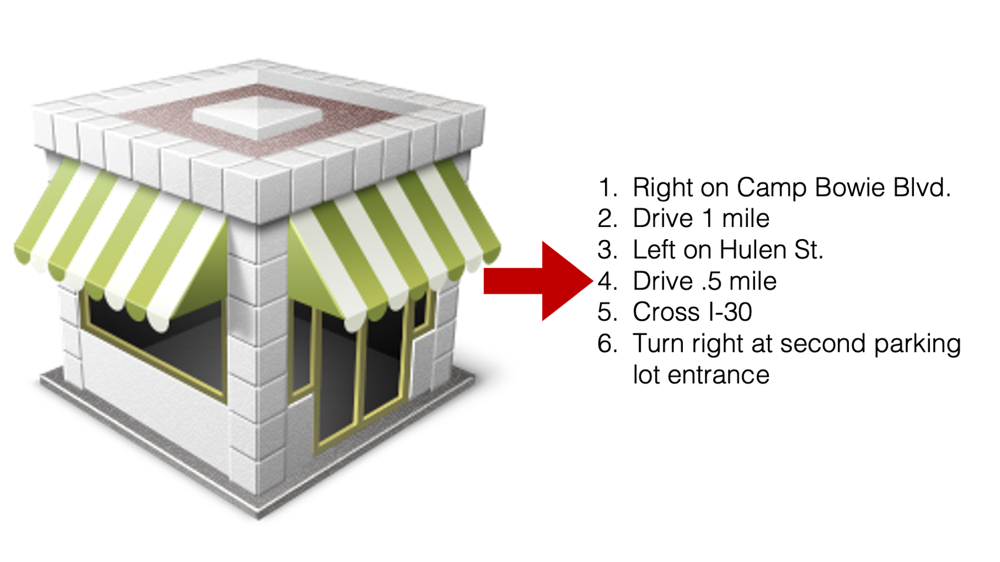
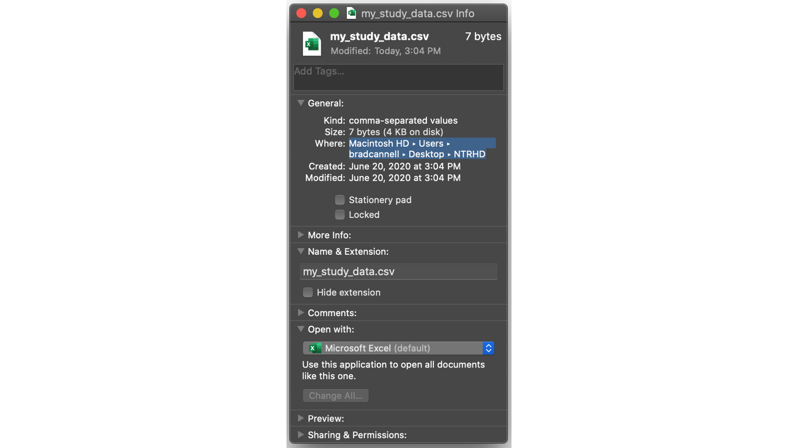
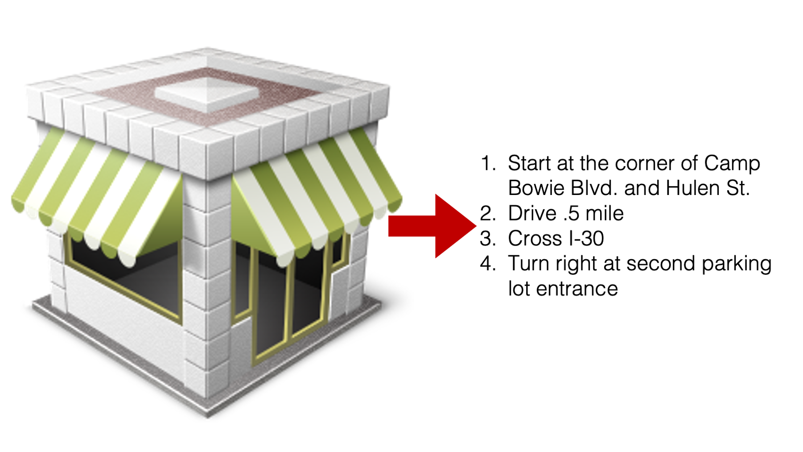
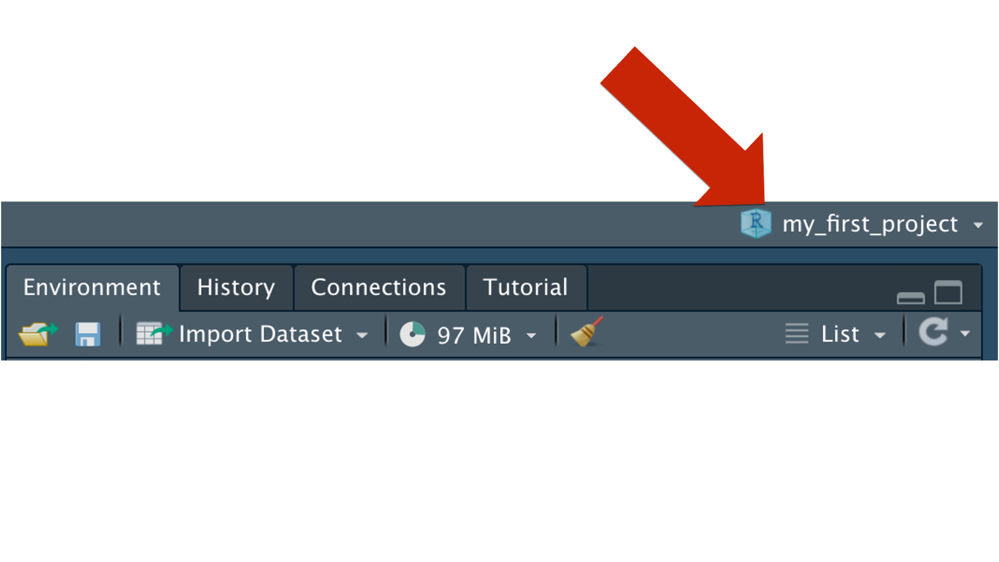
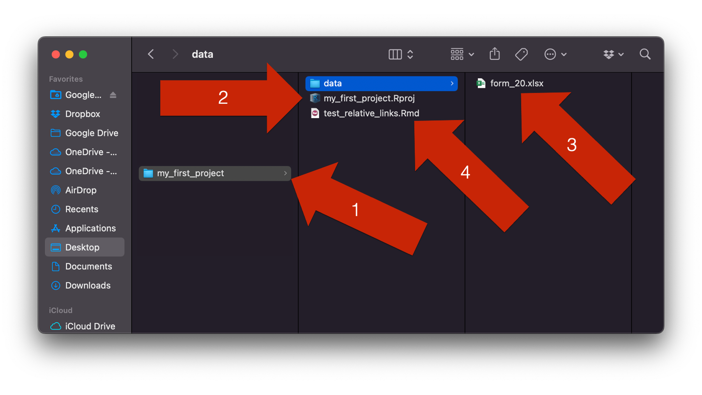
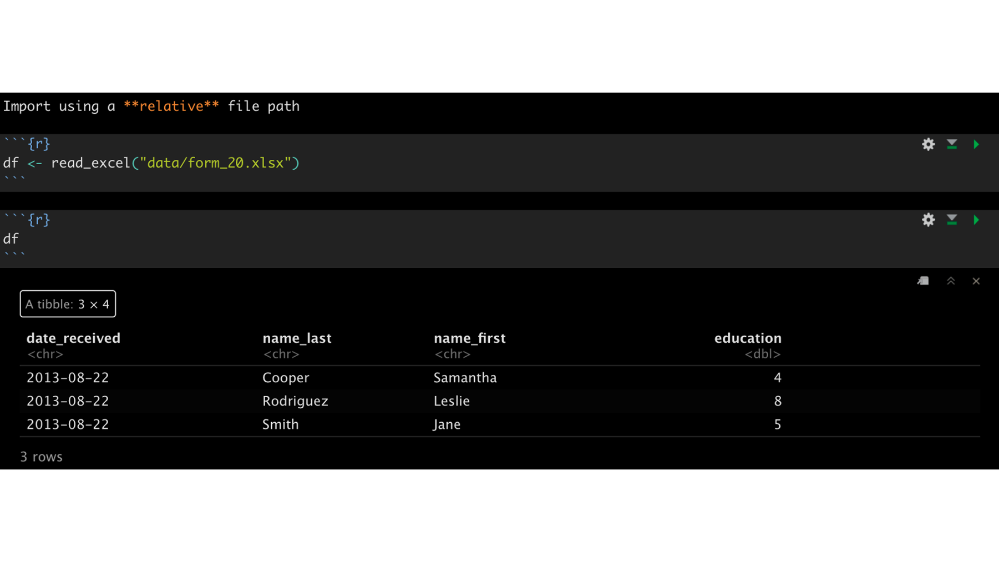

13 File Paths
In this part of the book, we will need to work with file paths. File paths are nothing more than directions that tell R where to find, or place, data on our computer. In our experience, however, some students are a little bit confused about file paths at first. So, in this chapter we will briefly introduce what file paths are and how to find the path to a specific file on our computer.
Let’s say that we want you to go to the store and buy a loaf of bread.

When we say, “go to the store”, this is really a shorthand way of telling you a much more detailed set of directions.

Not only do you need to do all of the steps in the directions above, but you also need to use the exact sequence above in order to arrive at the desired destination.
File paths aren’t so different. If we want R to “go get” the file called my_study_data.csv, we have to give it directions to where that file is located. But the file’s location is not a geographic location that involves making left and right turns. Rather, it is a location in your computer’s file system that involves moving deeper into folders that are nested inside one another.

For example, let’s say that we have a folder on our desktop called “NTRHD” for “North Texas Regional Health Department.

And, my_study_data.csv is inside the NTRHD folder.

We can give R directions to that data using the following path:
/Users/bradcannell/Desktop/NTRHD/my_study_data.csv (On Mac)
OR
C:/Users/bradcannell/Desktop/NTRHD/my_study_data.csv (On Windows)
⚠️Warning: Mac and Linux use forward slashes in file paths (/) by default. Windows uses backslashes (\) in file paths by default. However, no matter which operating system we are using, we should still use forward slashes in the file paths we pass to import and export functions in RStudio. In other words, use forward slashes even if you are using Windows.
These directions may be read in a more human-like way by replacing the slashes with “and then”. For example, /Users/bradcannell/Desktop/NTRHD/my_study_data.csv can be read as “starting at the computer’s home directory, go into files that are accessible to the username bradcannell, and then go into the folder called Desktop, and then go into the folder called NTRHD, and then get the file called my_study_data.csv.”
⚠️Warning: You will need to change bradcannell to your username, unless your username also happens to be bradcannell.
⚠️Warning: Notice that we typed .csv at the end immediately after the name of our file my_study_data. The .csv we typed is called a file extension. File extensions tell the computer the file’s type and what programs can use it. In general, we MUST use the full file name and extension when importing and exporting data in R.
Self Quiz:
Let’s say that we move my_study_data.csv to a different folder on our desktop called research. What file path would we need to give R to tell it how to find the data?
/Users/bradcannell/Desktop/research/my_study_data.csv (On Mac)
OR
C:/Users/bradcannell/Desktop/research/my_study_data.csv (On Windows)
Now let’s say that we created a new folder inside of the research folder on our desktop called my studies. Now what file path would we need to give R to tell it how to find the data?
/Users/bradcannell/Desktop/research/my studies/my_study_data.csv (On Mac)
OR
C:/Users/bradcannell/Desktop/research/my studies/my_study_data.csv (On Windows)
13.1 Finding file paths
Now that we know how file paths are constructed, we can always type them manually. However, typing file paths manually is tedious and error prone. Luckily, both Windows and MacOS have shortcuts that allow us to easily copy and paste file paths into R.
On a Mac, we right-click on the file we want the path for and a drop-down menu will appear. Then, click the Get Info menu option.

Now, we just copy the file path in the Where section of the get info window and paste it into our R code.

Alternatively, as shown below, we can right click on the file we want the path for to open the same drop-down menu shown above. But, if we hold down the alt/option key the Copy menu option changes to Copy ... as Pathname. We can then left-click that option to copy the path and paste it into our R code.

A similar method exists in Windows as well. First, we hold down the shift key and right click on the file we want the path for. Then, we click Copy as path in the drop-down menu that appears and paste the file path into our R code.
13.2 Relative file paths
All of the file paths we’ve seen so far in this chapter are absolute file paths (as opposed to relative file paths). In this case, absolute just means that the file path begins with the computer’s home directory. Remember, that the home directory in the examples above was /Users/bradcannell. When we are collaborating with other people, or sometimes even when we use more than one computer to work on our projects by ourselves, this can problematic. Pause here for a moment and think about why that might be…
Using absolute file paths can be problematic because the home directory can be different on every computer we use and is almost certainly different on one of our collaborator’s computers. Let’s take a look at an example. In the screenshot below, we are importing an Excel spreadsheet called form_20.xlsx into R as an R data frame named df. Don’t worry about the import code itself. We will learn more about importing Microsoft Excel spreadsheets soon. For now, just look at the file path we are passing to the read_excel() function. By doing so, we are telling R where to go find the Excel file that we want to import. In this case, are we giving R an absolute or relative file path?

We are giving R an absolute file path. We know this because it starts with the home directory – /Users/bradcannell. Does our code work?
Yes! Our code does work. We can tell because there are no errors on the screen and the df object we created looks as we expect it to when we print it to the screen. Great!!
Now, let’s say that our research assistant – Arthur Epi – is going to help us analyze this data as well. So, we share this code file with him. What do you think will happen when he runs the code on his computer?

When Arthur tries to import this file on his computer using our code, he gets an error. The error tells him that the path /Users/bradcannell/Dropbox/02 Teaching/R4Epi Textbook/my_first_project/data/form_20.xlsx doesn’t exist. And on Arthur’s computer it doesn’t! The file form_20.xlsx exists, but not at the location /Users/bradcannell/Dropbox/02 Teaching/R4Epi Textbook/my_first_project/data/. This is because Arthur’s home directory is /Users/arthurepi not /Users/bradcannell. The directions are totally different!
To make this point clearer, let’s return to our directions to the store example from earlier in the chapter. In that example, we only gave one list of directions to the store.
Notice that these directions assume that we are starting from our house. As long as we leave from our house, they work great! But what happens if we are at someone else’s house and we ask you to go to the store and buy a loaf of bread? You’d walk out the front door and immediately discover that the directions don’t make any sense! You’d think, “Camp Bowie Blvd.? Where is that? I don’t see that street anywhere!”
Did the store disappear? No, of course not! The store is still there. It’s just that our directions to the store assume that we are starting from our house. If these directions were a file path, they would be an absolute file path. They start all the way from our home and only work from our home.
So, could Arthur just change the absolute file path to work on his computer? Sure! He could do that, but then the file path wouldn’t work on Brad’s computer anymore. So, could there just be two code chunks in the file – one for Brad’s computer and one for Arthur’s computer? Sure! We could do that, but then one code chunk or the other will always throw an error on someone’s computer. That will mean that we won’t ever be able to just run our R code in its entirety. We’ll have to run it chunk-by-chunk to make sure we skip the chunk that throws an error. And this problem would just be multiplied if we are working with 5, 10, or 15 other collaborators instead of just 1. So, is there a better solution?
Yes! A better solution is to use a relative file path. Returning to our directions to the store example, it would be like giving directions to the store from a common starting point that everyone knows.

Notice that the directions are now from a common location, which isn’t somebody’s “home”. Instead, it’s the corner of Camp Bowie Blvd. and Hulen St. You could even say that the directions are now relative to a common starting place. Now, we can give these directions to anyone and they can use them as long as they can find the corner of Camp Bowie and Hulen! Relative file paths work in much the same way. We tell RStudio to anchor itself at a common location that exists on everyone’s computer and then all the directions are relative to that location. But, how can we do that? What location do all of our collaborators have on all of their computers?
The answer is our R project’s directory (i.e., folder)! In order to effectively use relative file paths in R, we start by creating an R project. If you don’t remember how to create R projects, this would be a good time to go back and review the R projects chapter.
In the screenshot below, we can see that our RStudio session is open in the context of our R project called my_first_project.

In that context, R starts looking for files in our R project folder – no matter where we put the R project folder on our computer.
For example, in the next screenshot, we can see that the R project folder we previously created (arrow 1), which is called my_first_project, is located on a computer’s desktop. One way we can tell that it’s an R project is because it contains an R project file (arrow 2). We can also see that our R project now contains a folder, which contains an Excel file called form_20.xlsx (arrow 3). Finally, we can see that we we’ve added a new R markdown file called test_relative_links.Rmd (arrow 4). That file contains the code we wrote to import form_20.xlsx as an R data frame.

Because we are using an R project, we can tell R where to find form_20.xlsx using a relative file path. That is, we can give R directions that begin at the R project’s directory. Remember, that just means the folder containing the R project file. In this case, my_first_project. Pause here for a minute. With that starting point in mind, how would you tell R to find form_20.xlsx?
Well, you would say, “go into the folder called data, and then get the file called form_20.xlsx.” Written as a file path, what would that look like?
It would look like data/form_20.xlsx. Let’s give it a try!

It works! We can tell because there are no errors on the screen and the df object we created looks as we expect it to when we print it to the screen.
Now, let’s try it on Arthur’s computer and see what happens.

As you can see, the absolute path still doesn’t work on Arthur’s computer, but the relative path does! It may not be obvious to you now, but this makes collaborating so much easier!
Let’s quickly recap what we needed to do to be able to use relative file paths.
We need to create an R project.
We needed to save our R code and our data inside of the R project directory.
We needed to share the R project folder with our collaborators. This part wasn’t shown, but it was implied. We could have shared our R project by email. We could have shared our R project by using a shared cloud-based file storage service like Dropbox, Google Drive, or OneDrive. Better yet, we could have shared our R project using a GitHub repository, which we will discuss later in the book.
We replaced all absolute file paths in our code with relative file paths. In general, we should always use relative file paths if at all possible. It makes our code easier to read and maintain, and it makes life so much easier for us when we collaborate with others!
Now that we know what file paths are and how to find them, let’s use them to import and export data to and from R.